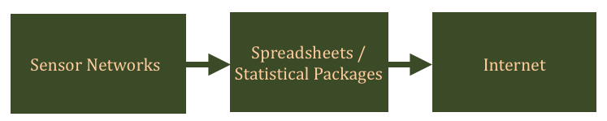

|
Barbara Lerner Elizabeth Fong Mount Holyoke College |
Emery Boose Aaron Ellison Matt Lau Harvard Forest |
Margo Seltzer University of British Columbia |
|
Thomas Pasquier University of Bristol |
Joe Wonsil Carthage College |
Orenna Brand Columbia University |
Technology continues to change the way that scientists work. Nearly all scientific data are analyzed with computers and increasingly data are collected directly in electronic form. A good example is provided by sensor networks, which may use electronic sensors and wireless networks to collect vast quantities of data at a very fast rate. Scientific programs, ranging from Excel spreadsheets to supercomputer applications, manipulate the collected data to produce scientific results. Scientists can then disseminate both the raw and processed data quickly and to a broad, unknown audience by publishing it on their websites.

Good science requires more than results. It requires reproducibility, verifiability and authentication. Reproducibility is necessary to ensure that the results are not an accidental outcome, but the result of genuine, carefully-performed experimentation and analysis. Verifiability is necessary to assure that the results really did derive from the data, even if reproducing the experiment is not a viable option. Finally, authentication is necessary to believe that the raw data used in the scientific work is itself valid. Without confidence in these issues, the credibility of data posted on the Internet has the same level as the typical Wikipedia article.
For example, data may be collected by sensors and downloaded to a computer, perhaps run through some scripts to perform calibration and cleaning, posting the results for public use on a website, without a scientist checking their validity. What can go wrong? An anemometer might freeze in an icestorm, reporting a windspeed of 0 incorrectly. A sensor might slip out of calibration over time, but the amount of slippage will remain unknown until the sensor is shipped back to the manufacturer for calibration tests, most likely long after the data have been made publicly available. Bugs in the software that processes the data may lead to incorrect conclusions. And so on. With the pace at which sensors produce data and programs manipulate data, it is clear that documentation of the data's provenance itself must be automated, so that there can be some hope of understanding the data and correcting for errors that arise in its collection or handling.
If you are an undergraduate interested in an interdisciplinary project involving computer science and ecology, join us for the Summer Research Program (REU) at Harvard Forest!
We have been fortunate to have had many terrific REU students work on this and related projects:
This material is based upon work supported by the National Science Foundation under Awards No. CCR-0205575, CCR-0427071, and IIS-0705772, the National Science Foundation REU grants DBI-0452254 and DBI-1003938, the Mount Holyoke Center for the Environment, and the Charles Bullard Fellowship at Harvard University and is a contribution from the Harvard Forest Long-Term Ecological Research (LTER) program. Any opinions, findings, and conclusions or recommendations expressed in this material are those of the authors and do not necessarily reflect the views of the National Science Foundation, Harvard University or Mount Holyoke College.